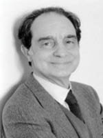

(1923 – 1985)

Yazar İtalo Calvino, bebekken ailesiyle Küba'dan İtalya'ya döndü ve II. Dünya Savaşı sonrası İtalyan kültürünün en önemli adlarından biri haline geldi. Roman yazarlığının yanı sıra İtalya Komünist Parti üyeliği ve Einaudi Yayınevi'ndeki editörlük görevleriyle de tanındı. Calvino, postmodernizm akımı içinde eser üreten önemli yazarlardan biridir...
Fantezi, fabl ve komedinin iç içe harmanlandığı romanlarıyla tanınan yazar İtalo Calvino (okunuşu: İtalo Kalvino), 1923 yılında Küba'da dünyaya geldi. İtalo doğduğunda 48 yaşında olan babası Mario ve 37 yaşında olan annesi Eva bitkibilimciydi. Aile, bebeklerinin doğumundan kısa süre sonra anavatanları İtalya'ya döndü ve babası Torino Üniversitesi'nde ders verirken İtalo da San Remo'daki çiftliklerinde büyüdü. Bölgenin zengin bitkisel yapısı ve yazarın bunlar hakkındaki geniş bilgisi, sonradan yazdığı romanlarda net olarak görüldü.
Calvino tam Torino Üniversitesi'ndeki bilim eğitimini tamamlamıştı ki İtalya Almanya tarafından işgal edildi ve hemen direnişe katılan yazar 1943-45 yıllarını hem yurttaşı İtalyan faşistleriyle hem de Nazi ordularıyla savaşarak geçirdi. Savaştan sonra İtalyan Komünist Partisi'ne katılan İtalo Calvino üniversite öğrenimine edebiyat fakültesinde devam etme kararı aldı. Solcu gazete ve dergilerde köşe yazarlığı yapmaya başladı. Örümcek Ağlarına Giden Yol adlı ilk romanında II. Dünya Savaşı yıllarındaki deneyimlerini anlatan yazar, daha ilk romanıyla büyük bir üne kavuştu. Bu romanıyla yeni-gerçekçi İtalyan edebiyatı içinde sağlam bir yer edinen Calvino, arkadaşları Natalia Ginzburg ve Cesare Pavese'nin daveti üzerine onların yeni yayınevi "Einaudi"ye katıldı ve sonraki tüm yapıtlarını orada yayımladı.
Ancak Calvino'nun sonraki romanları çok daha farklı bir çizgi izledi: İkiye Bölünen Vikont (1952) romanında bir savaş sırasında ikiye bölünmüş bir askerin fantastik öyküsü anlatılır. Vikont'un hayatında her bir yarısı sırayla yaşamaktadır; üstelik de birbirleriyle çok zıttırlar! 1957 tarihli Ağaca Tüneyen Baron'da babasının otoritesine karşı çıkan ve ömrünü ağaç tepelerinde geçiren bir çocuğun yaşadıkları anlatılır. 1959 tarihli Var Olmayan Şövalye romanında ise bir şövalye zırhının öyküsü anlatılmaktadır. Tamamen farklı zamanlarda geçen bu üç romanın ortak yanı, güncel hayatı daha net gösterebilmek için fantezi, fabl ve komediyi bir arada kullanmalarıdır.
1950'li yılların çoğunu Roma'da geçiren yazar, 1956 yılında Sovyetler Birliği'nin Macaristan'ı işgali üzerine büyük hayal kırıklığına kapıldı ve Komünist Parti'den istifa etti. 1956 yılında çıkan İtalyan Masalları adlı kitabında 200 halk masalını bir araya getiren yazarın çalışması çok büyük ilgi çekti ve bu kitabı Grimm Kardeşlerin Alman masallarını derlemeleri kadar önemli bir kitap olarak kabul edildi.
1959 yılında ABD'ye altı aylık bir ziyarette bulunan Calvino, 60'ların başında Paris'e yerleşti ve 1960 yılında yayımlanan I Nostri Antenati (Atalarımız) adlı kitabında yer alan fantastik hikayeleriyle uluslararası bir üne kavuştu. 1963'te, üç kısa öyküsünden oluşan Gözcü adlı kitabını yayımladı. 1964 yılında, UNESCO'da çevirmen olarak çalışan Chichita Singer ile evlendi. 1972'de yayımlanan Görünmez Kentler'de Marco Polo'nun Kubilay Han'ın ülkesine yaptığı yolculuğu ve gördüğü hayali yerleri, 1973'te çıkan Kesişen Yazgılar Şatosu'nda Ortaçağ tarot kartları çevresinde geçen olayları anlattı ve 1979'da da Bir Kış Gecesi Eğer Bir Yolcu... yayımlandı. 1970'li yıllarda yazar, Paris'te yaşayan birçok meslektaşıyla düzenli aylık toplantılara katıldı ve modern edebiyatın sınırlarını tartıştı.
1975'te İtalo Calvino, yine ABD'ye gitti ve Amerikan Bilimler ve Sanatlar Akademisi ve Enstitüsü'ne onursal üye olarak kabul edildi. 1980'de, Chichita ve kızları Giovana ile birlikte Roma'ya döndü. 1983'te komik ve soyut bir alegori olarak kabul edilen romanı Bay Palomar yayımlandı. İtalo Calvino, 19 Eylül 1985'te geçirdiği beyin kanaması sonucu İtalya'da Siena'da vefat etti.
Seçme Romanları: Örümcek Ağlarına Giden Yol, İkiye Bölünen Vikont (Yapı Kredi Yayınları, 2009), Ağaca Tüneyen Baron (Yapı Kredi Yayınları, 2009), Varolmayan Şövalye (Yapı Kredi Yayınları, 2009)¸Kozmokomik Öyküler, Kesişen Yazgılar Şatosu, Görünmez Kentler (Yapı Kredi Yayınları, İstanbul, 2010); Bir Kış Gecesi Eğer Bir Yolcu, Paris'te Münzevi, Amerika Dersleri